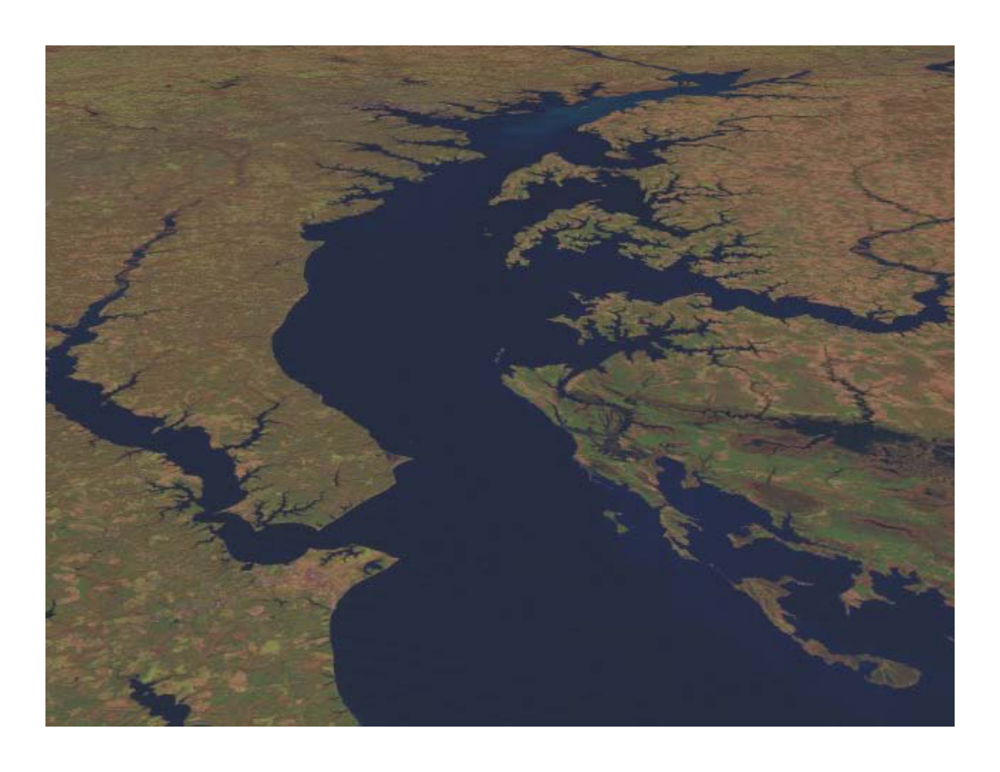
The Chesapeake Bay TMDL
The Chesapeake Bay TMDL
Plotting the Path to Bay Water Quality Restoration
Katherine Antos
U.S. EPA Region III Chesapeake Bay Program Office
August 6, 2009
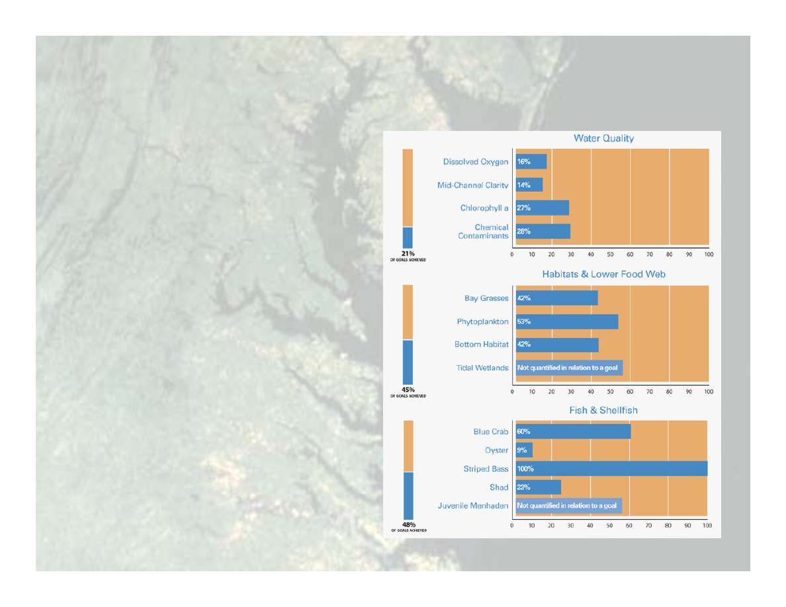
2008 Bay Health Summary
•
Most of the Bay’s waters
are degraded—less than
are degraded
less than
one-third of Bay water
quality goals are being met.
•
The Bay’s critical habitats
and food webs are currently
a d ood
ebs a e cu e t y
at about a third of desired
levels.
•
Many of the Bay’s fish and
shellfish populations are
p p
below historic levels.
Source: CBP 2008
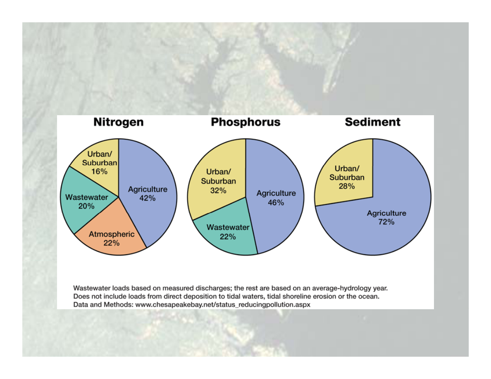
Pollutant Sources to the Bay
Pollutant Sources to the Bay

What is a Total Maximum
Daily Load (TMDL)?
• For pollutants impairing our waters
• Loading to stream necessary to meet
• Loading to stream necessary to meet
water quality standards
• Split into wasteload allocations for
• Split into wasteload allocations for
point sources and load allocations for
non-point sources
non point sources
In other words a pollution budget
In other words...a pollution budget

Myth
Myth
• The Bay TMDL will be another paper exercise
lti
i li it d i
l
t ti
f
t i
t
resulting in limited implementation of nutrient
and sediment controls
Fact
• The Chesapeake Bay TMDL will be unlike any
other, being part of a comprehensive framework
for implementation
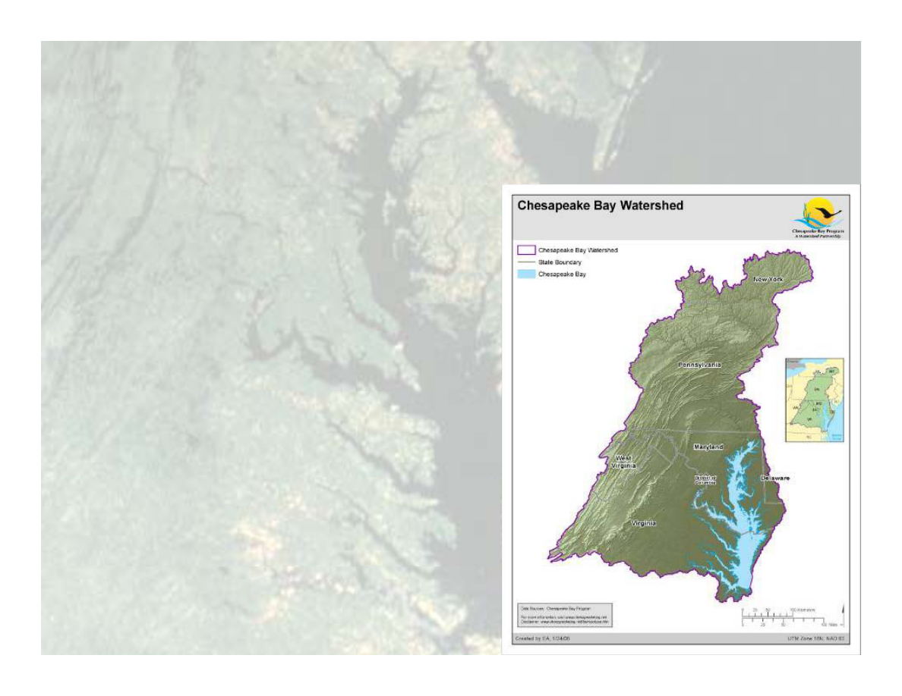
Chesapeake Bay TMDL:
The Basics
• Will establish a ‘pollution
p
budget’ for N, P, and S
• Will establish load caps for all
p
six Bay states and the District
of Columbia
• Wasteload allocations for
point sources; load
allocations for nonpoint
allocations for nonpoint
sources
• Planned for completion by
• Planned for completion by
December 2010
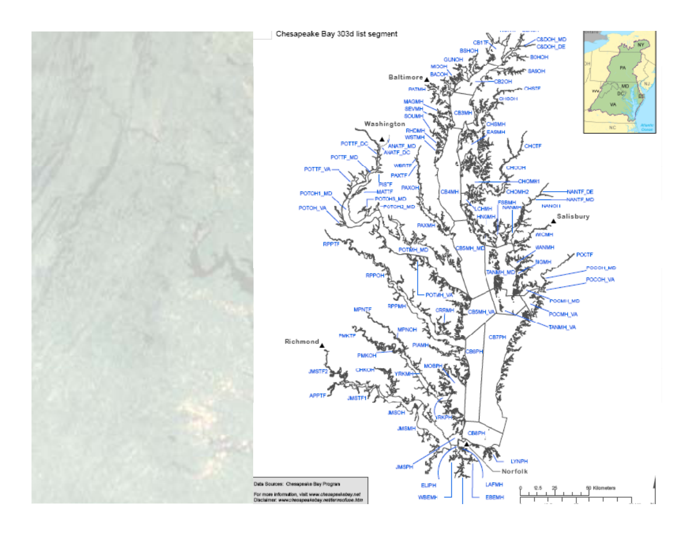
Impaired
Segments
• Clean Water Act
Segments
requires a TMDL
for each impaired
waterbody
waterbody
• MD, VA, DE and
DC h
li
d
DC have listed
Bay tidal waters
on the basis of
on the basis of
designated use
by tidal Bay
segments (92
total)
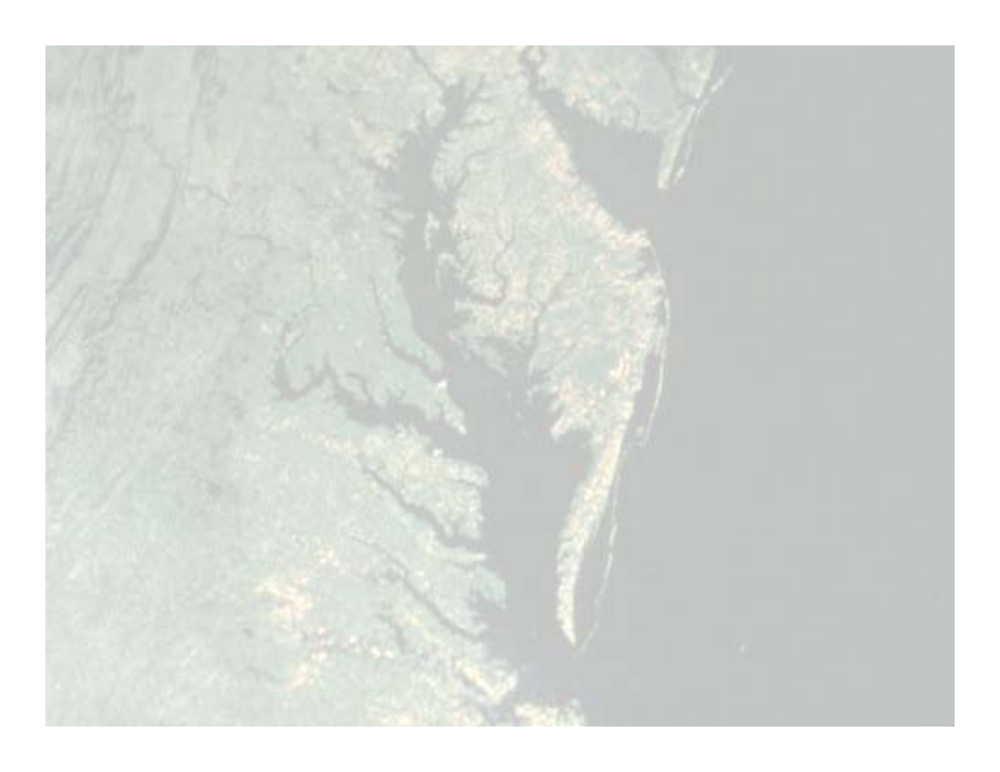
Bay TMDL Schedule
y
• Basin-jurisdiction target loads: October 2009
• Bay TMDL public meetings: Fall 2009
• States set geographic- and source-specific
loading caps in their Implementation Plans:
October – May 2010
EPA
t bli h
D
ft B
TMDL J
2010
• EPA establishes Draft Bay TMDL: June 2010
• Public comment period/public meetings: Summer
2010
2010
• EPA establishes Final Bay TMDL: December 2010
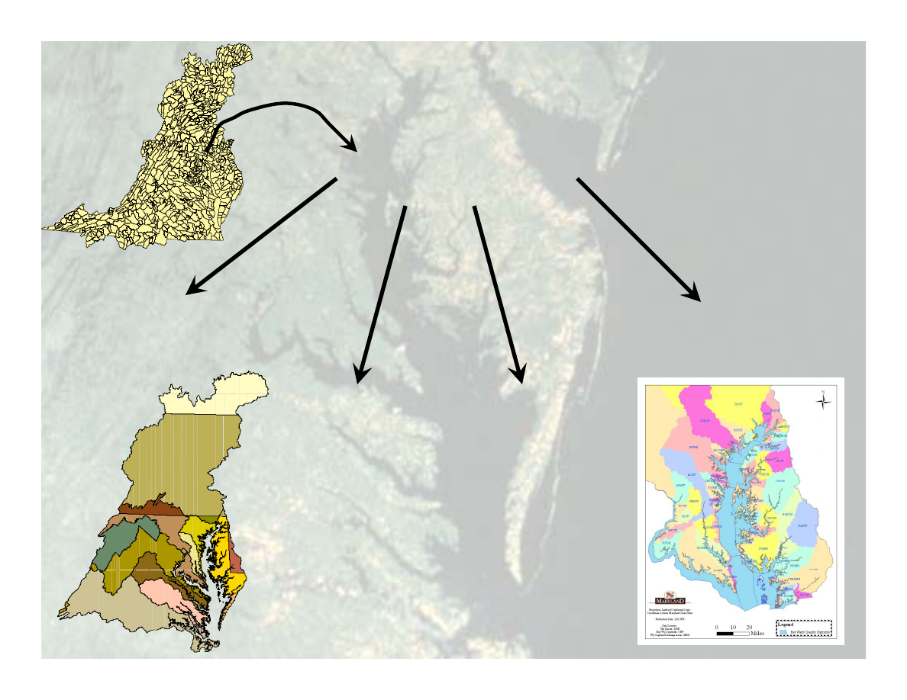
Starting point from the Bay
Watershed Model…
County Segment
Watershed Model…
Impaired Tidal
Segmentshed
Major Tributary
Basin
County
State
…leading to various
aggregations of
gg
g
county segments.
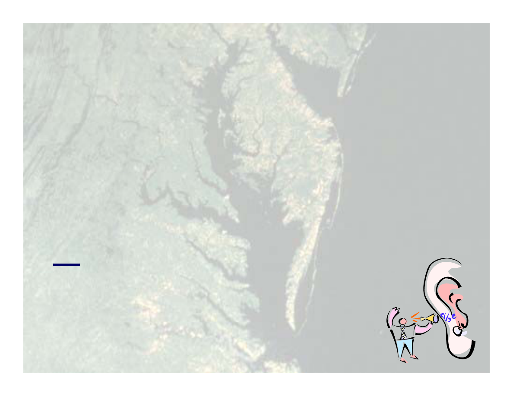
What the new science and new
models are telling s
models are telling us
• Cleaning up the Bay results in local
Cleaning up the Bay results in local
water quality improvements
• Full implementation of the jurisdictions’
• Full implementation of the jurisdictions’
current tributary strategies will not be
enough to restore Bay water quality
enough to restore Bay water quality
• All source sectors will need significant
d
ti
reductions
– Local involvement in planning and
i
l
t ti
i
iti
l
implementation is critical
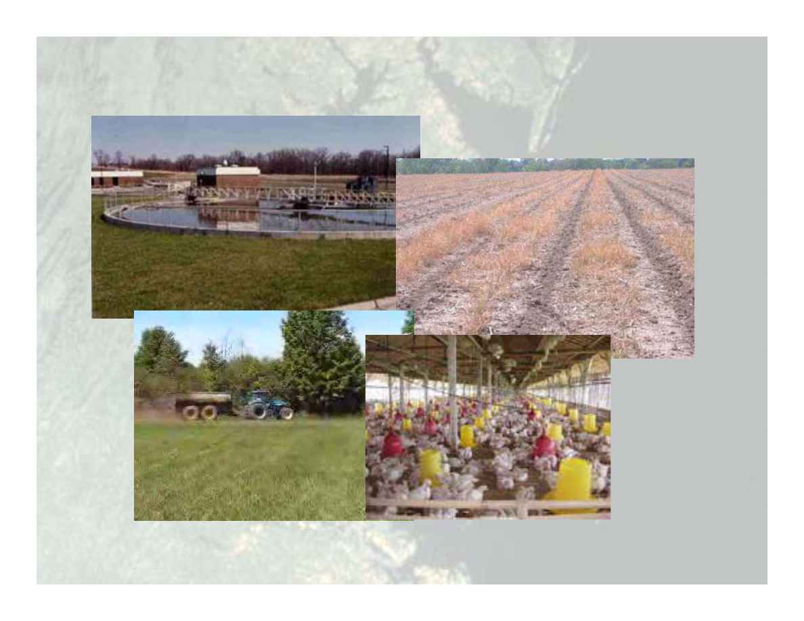
What about implementation?
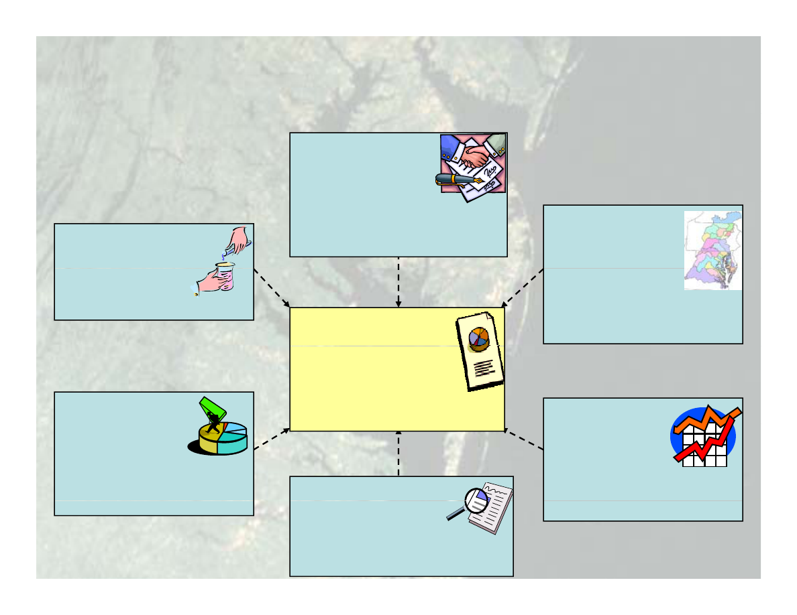
The Bay TMDL Implementation and
Accountability Framework
Accountability Framework
Employ
Consequences
Consequences
by EPA
if appropriate
progress is not being made
Develop
Implementation
plans
Monitor
Effectiveness
Establish
Chesapeake
plans
Identifying the
nutrient and
sediment controls needed to
meet the Basin caps
Effectiveness
to assess
implementation actions
Set Biennial
Milestones
Chesapeake
Bay TMDL:
•Set total nutrient and
sediment caps
•Wasteload and load allocations
Evaluate
Identify Program
Milestones
for closing identified
program gaps.
Contingencies
by
Wasteload and load allocations
Program
capacity
(programmatic, funding,
technical) to fully implement
Gaps
between needed
controls and existing program
capacity
states if milestones fall short
State Implementation Plans
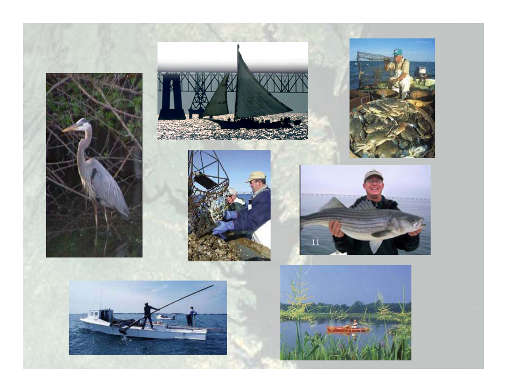
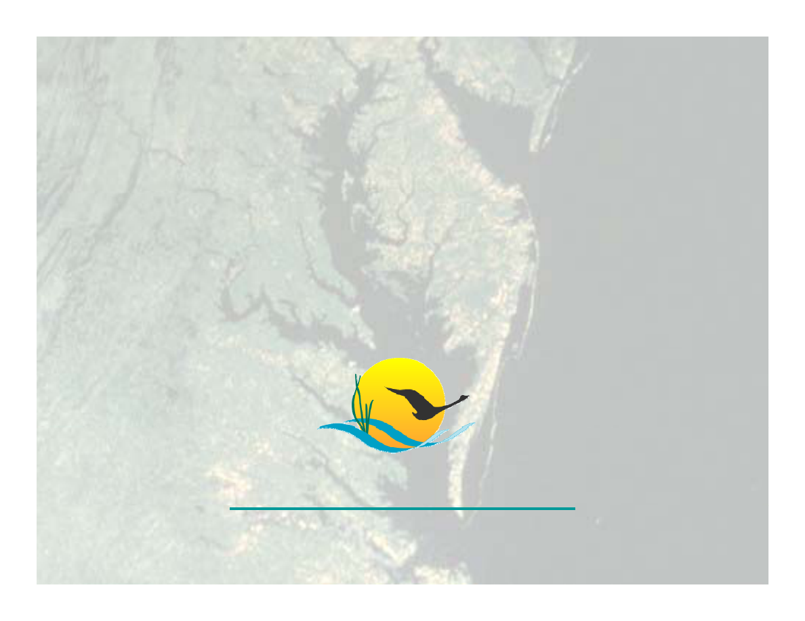
Katherine Antos
U.S. EPA Chesapeake Bay Program Office
Water Quality Implementation Team Coordinator
antos.katherine@epa.gov
@ p g
(410) 295-1358